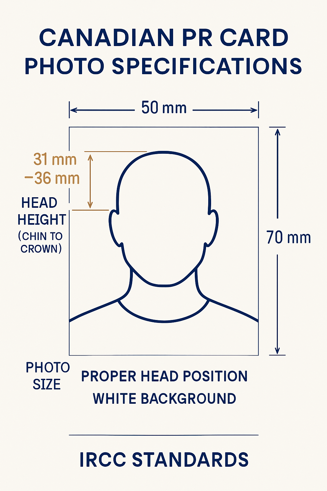

Professional PR Card Photos in Downtown Toronto
At Passport Photo Toronto, we specialize in taking high-quality Permanent Resident (PR) card photos that meet all the strict requirements set by Immigration, Refugees and Citizenship Canada (IRCC). Our experienced photographers understand exactly what is needed for your PR card application to be accepted the first time.
PR Card Photo Requirements
Canadian PR card photos must meet specific criteria to be accepted by IRCC. Our service ensures your photos will comply with all these requirements:

- Two identical, unaltered photos taken within the last six months
- Clear, sharp and in focus with a neutral facial expression
- Taken against a plain white or light-colored background
- Uniform lighting with no shadows on the face or background
- Show a full front view of the face with both edges of the face clearly visible
- Size: 50mm x 70mm (2" x 2.75")
- Head size from chin to crown: 31mm to 36mm (1.25" to 1.4")
- Printed on high-quality photo paper
- No glasses (as per current IRCC regulations)
- No head coverings (except for religious purposes)
Why Choose Our PR Card Photo Service?
There are many reasons why Toronto residents and newcomers to Canada trust us for their PR card photos:
- Guaranteed Acceptance: If your photos are rejected by IRCC for any technical reason, we'll retake them for free.
- Experienced with IRCC Requirements: Our team has taken thousands of PR card photos and knows exactly what is required.
- No Appointment Needed: Walk in during our business hours and have your photos taken immediately.
- Quick Service: Your photos will be ready in just minutes.
- Convenient Downtown Location: We're located at 63 McCaul St, easily accessible from anywhere in Toronto.
- Affordable Pricing: Our PR card photos are competitively priced at $24.99.
- Multilingual Staff: We understand the needs of newcomers to Canada and can provide assistance in multiple languages.
PR Card Photos for New Applications and Renewals
We provide PR card photo services for both:
- New PR Card Applications: For those who have just received their permanent resident status and need photos for their first PR card.
- PR Card Renewals: For permanent residents who need to renew their existing PR cards before expiration.
The Process: How It Works
Getting your PR card photos at our studio is simple:
- Visit our studio at 63 McCaul St in downtown Toronto (no appointment needed)
- Our photographer will take your photo against our professional backdrop
- We'll review the photo with you to ensure it meets all IRCC requirements
- We'll print two identical copies on high-quality photo paper
- Your photos will be ready in minutes, properly sized and ready for your PR card application
Digital Options Available
In addition to printed photos, we can also provide digital copies of your PR card photos for a small additional fee. These can be useful for:
- Keeping a backup of your PR card photo
- Online PR card renewal applications
- Other government applications that may require the same photo
PR Card Photos for the Whole Family
We provide PR card photo services for everyone in your family:
- Infants and Babies: We have special techniques to capture compliant photos of even the youngest children.
- Children: Our photographers are patient and experienced with kids of all ages.
- Adults: Quick and efficient service for busy professionals.
- Seniors: We take extra care to ensure comfort and satisfaction.
Visit Us Today for Your PR Card Photos
No appointment is necessary! Simply visit our studio during business hours, and we'll have your PR card photos ready in minutes. We're conveniently located in downtown Toronto at 63 McCaul St, just steps away from OCAD University and the Art Gallery of Ontario.